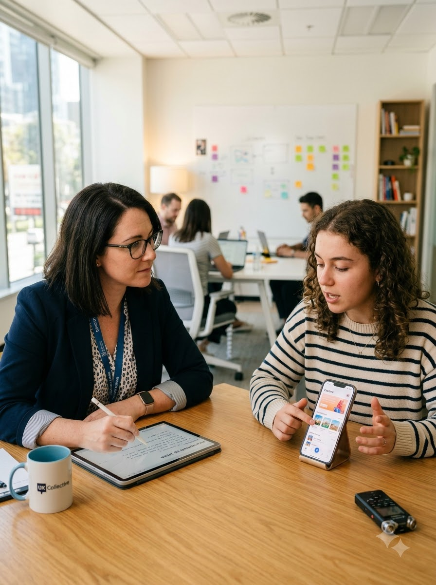

Research debt: the interest you pay on every question you didn’t ask
Teams price design debt. They price technical debt. Almost nobody prices the third kind — and it is the one that compounds quietest.

A product team can tell you, to the sprint, how much technical debt they are carrying. Many can tell you where the design system has drifted. Ask the same team which of their core assumptions about users has never been tested, and you will usually get a pause, then a list — and the list is longer than anyone expected it to be.
That list is research debt. It is not ignorance; ignorance is not knowing. Research debt is proceeding as though you know, at speed, on a belief nobody has checked. Like the other two kinds it is often the right trade at the time. Like the other two kinds it accrues interest, and the interest is paid by whoever is holding the product eighteen months later.
What research debt actually is
Every product decision rests on a stack of assumptions. Some are cheap and safe — people can read. Some are load-bearing: that the person who chooses the product is the person who uses it; that users will tolerate a one-time setup for a long-term gain; that the workflow we drew on the whiteboard resembles the one on the floor.
A load-bearing assumption that has been tested is a finding. The same assumption untested is a debt, and you can price it the same way you price any debt: by what it would cost to settle now, against what it will cost to settle later.
Where it accrues
In our own project reviews, the same four places come up again and again.
- The persona nobody has met. Written in a workshop, never checked against a person. It survives because it is useful, not because it is true.
- The edge case that turns out to be the median. Shared devices, patchy connectivity, someone else filling in the form. Dismissed early as an edge, discovered later as most of the market.
- The number without a question behind it. Analytics will tell you where people leave with real precision. It will never tell you why, and a dashboard read confidently is one of the most expensive forms of this debt.
- The competitor assumption. “Users expect it this way because everyone does it this way.” Sometimes true. Sometimes an entire category has been carrying the same untested belief for a decade.
The compounding part
Here is what makes it debt rather than a one-off cost. An untested assumption does not sit still. It gets built on.
Someone designs a flow around it. Someone writes copy that reinforces it. Someone builds a data model that encodes it, and now the assumption is not a belief in a document, it is a foreign key. A researcher who questions it in month two is asking a question. A researcher who questions it in month fourteen is asking for a migration.
We run this as a standing exercise on every engagement — an assumption register, priced and reviewed. It is part of how our ResearchOps training is taught.
See the ResearchOps programmePaying it down
You cannot test everything, and a team that tries will ship nothing. The useful move is not more research; it is explicit research debt. Three things make the difference.
Write the assumptions down where the decisions are made. Not in a research repository nobody opens — in the same document as the roadmap. An assumption that lives beside the decision it supports gets re-read every time that decision is revisited.
Price each one before you decide to carry it. Two questions: what does it cost to check now, and what does it cost to be wrong in market? Most assumptions are cheap on both counts and can be carried without ceremony. A handful are cheap to check and ruinous to get wrong. Those are the only ones worth arguing about.
Give it a review date. Debt you have chosen deliberately, with a date on it, is a plan. The same debt undated is just a thing you forgot.
What we changed in our own practice
Two things, both small, both awkward at first.
The first: our reports no longer end with recommendations. They end with the assumptions the work resolved, and the ones it did not — named, with what it would take to close each. A recommendation is a decision made by the person with the least context about budget, sequencing and politics. Handing a client a live list of open questions turned out to be worth more, and it is a great deal more honest about what a study can settle.
The second: we ask the assumption question in the kick-off, before scoping. Not “what do you want to learn” but “what are you already sure about?” The answers to the second question are where the research debt is, and they are almost never in the brief.
Neither is complicated. Both are uncomfortable, because both make visible how much of any product is running on belief. That discomfort is the useful part. You cannot pay down a debt you have not written on the balance sheet.